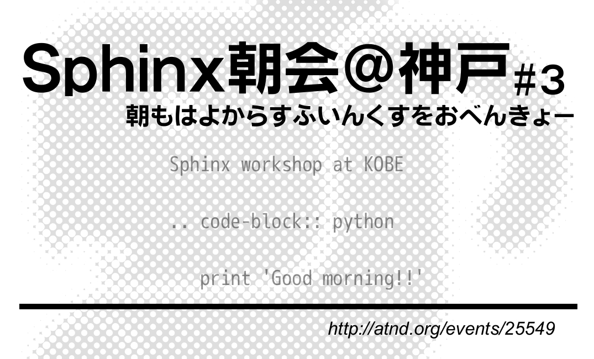
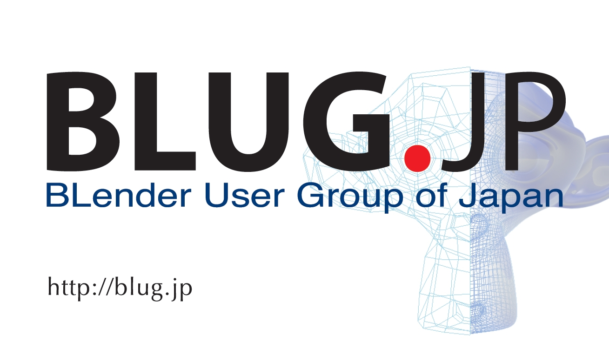

西のほうで「Sphinx朝会」やってきたのさ
お前誰よ?
- TwitterID : @lab1092
- 神戸から来ました。
- 今流行りの職業、’えすいーさん’
- プログラムとかあまりしない(Excel/Wordと戯れている時間のほうが長い)
- でも Python はわりと好きです。
Sphinx朝会
朝もはよからすふいんくすをおべんきょー

Sphinx朝会って?
Sphinx朝会とは
- Sphinx初心者向け の
- ‘make html’を体験するための
- (ハンズオン形式の)勉強会みたいなもの
です。(モヒカンさん向けじゃないよ)
3回行いました。
今回で3回目の実施です。
- 第一回:兵庫・神戸 6名
- 第二回:大阪・十三 12名
- 第三回:兵庫・神戸 9名
何をやったの?
3回、演習を中心に基本的なところを。(内容は同じ)
- Sphinxの環境を作る
- はじめての’make html’
- 演習問題で学習する
こんな感じで。
Sphinxについての紹介1
Sphinxとは何か？
- ドキュメント生成のツール
- reStructuredText記法(Wikiっぽい?
- ページ間のリンクを自動生成
- 強力なコードハイライト
- HTML, PDF, ePub, htmlhelp, latex, man...
Sphinxについての紹介2
reStructuredText記法って?
シンプルなテキストマークアップです。
Sphinxとは何か？
-----------------
* ドキュメント生成のツール
* reStructuredText記法(Wikiっぽい?
* ページ間のリンクを自動生成
* 強力なコードハイライト
* HTML, PDF, ePub, htmlhelp, latex, man...
Sphinxについての紹介3
何が嬉しい?
Sphinxでドキュメントを書くと…
- テキストエディタでサクサク書ける
- 文書の構造を保ってシンプルに書ける
- 強力なSphinx拡張も使える
- 様々なOSで動作
Sphinxについての紹介4
テキストエディタでサクサク
何せテキストなので、
- GitなどのVCSで管理可能
- コピペし放題（?）
- テキストエディタ上の見栄えが崩れにくいマークアップ
Sphinxについての紹介5
シンプルに書ける
- マークアップはシンプル。
- インデントと改行が文書構造を表現
Sphinxについての紹介6
強力なSphinx拡張
reSTructuredTextでなく、 Sphinx である必要。
- コードハイライト(pygments)
- 拡張テーマ(bizstyle,S6,etc...)
- blockdiag等
Sphinxについての紹介7
情報も充実のSphinx-Usres.jp。
日本のコミュニティが活発。
…Sphinx、皆さんご存知ですよね？ Pyfes 来てるくらいだし
やってみて気付いたこと
- 大阪に需要あり、神戸だと少し遠いっぽい。
- 意外な参加者
- Macは意外と環境構築が大変
意外な参加者
非Pythonistaの参加が多かった(ex. PHPer)
- PHPer 多かったよ
- 3回目神戸の時は3/9がPythonista
- 朝早いのはなんとかなりそう
- みんなドキュメントに苦労してるみたい
次は?
- 多分大阪。
- 4月中にはやりたいなー
- 今度は実践編的何か
- ネタください(つーか講師やってください)
- よろしくおねがいします。
宣伝してもいいですか？
BLUG.jp
http://blug.jp/
- 「ぶるぐじぇいぴー」と読みます。
- blender のユーザーグループです。
- 今日のOSC東京にもブース出してます

Thanks for watching!!
ホントはBlenderやりたいんだよね…